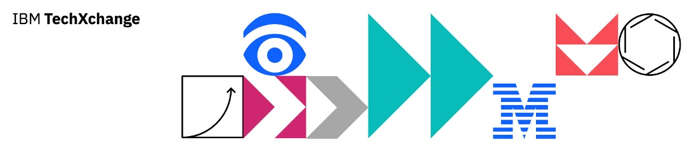

1788 - Simplify and optimize large-scale parallel computation with Serverless Fleets
1789 - Deploy your first application to IBM Cloud in 3 clicks
1790 - Reduce costs and optimize cloud resources on IBM Cloud
1791 - Develop and deploy AI applications with Red Hat OpenShift AI on IBM Cloud
1798 - Unlock Unstoppable Business Continuity with IBM Cloud Storage
1813 - Create and share secure Agentic AI solutions with Infrastructure-as-Code on IBM Cloud
1818 - Secure and Scalable Architecture Deployment via Platform Engineering Automation
1827 - Maximizing AI Efficiency: Optimal CPU, GPU, and Storage Configurations
1828 - Replicate with Confidence: Secure, Multi-Region Storage with IBM Cloud Object Storage
1829 - Building AI Workflows with Data Science Pipelines on IBM Cloud
1833 - Monitor and safeguard the security and compliance posture of generative and agentic AI workloads